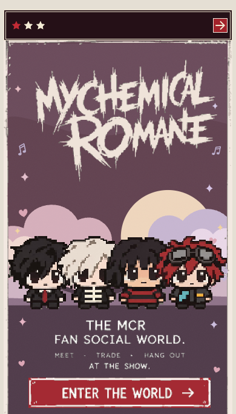
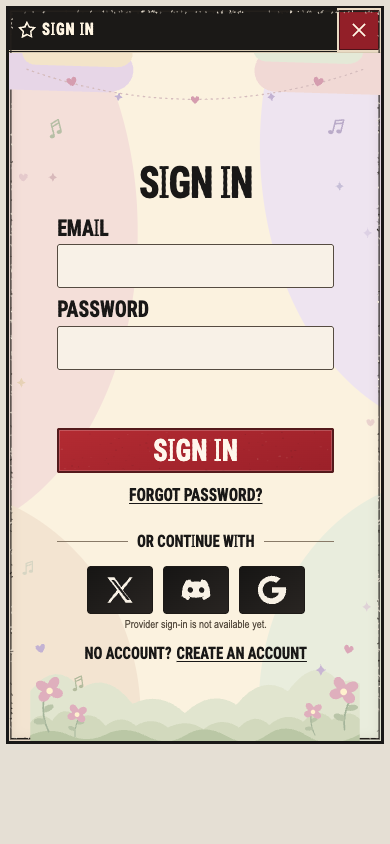
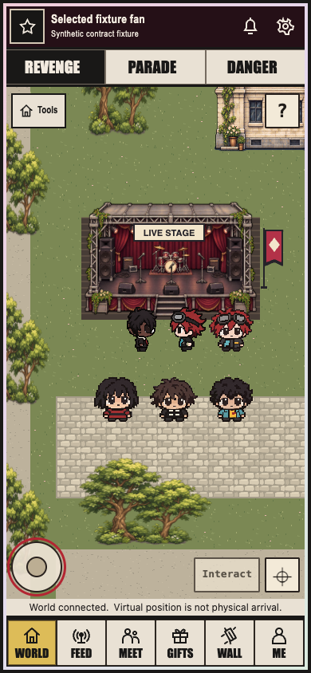
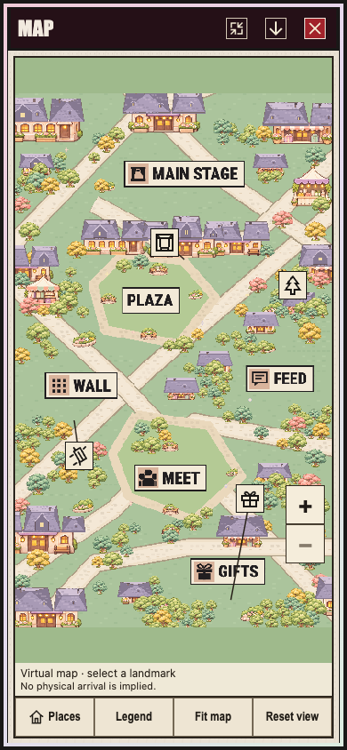
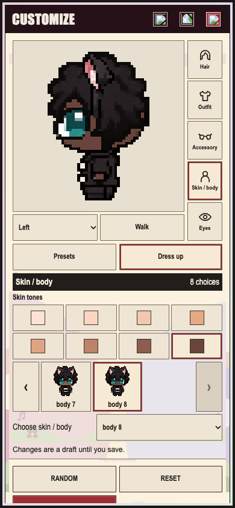
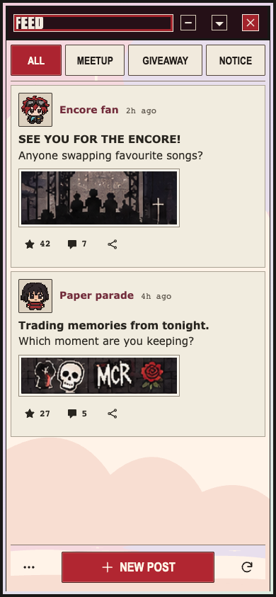
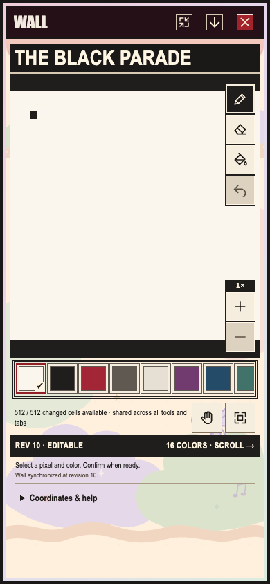

Source-bound owner captures, personally viewed. No new native run. Equal width; each side retains its original aspect. Fixture, source drift and whole-task limits remain in assessment.json.
Landing
390x684 is the actual reference-aspect capture, not an844px image squeezed down. Wordmark, four selected characters, compact copy and red entry control preserve the foreground hierarchy. Pastel/moon/cloud backdrop is an intentional later cute-background direction. Original gothic rose/graveyard scenery is not a new repair under the later background constraint. Exact full-fidelity acceptance is not implied by the existing bounded foreground qualification.
Unchanged supplied target · proportional crop
Retained source-bound capture · own aspect

Login
Final current-CSS390 image shows full heading, labels,44px inputs/submit, recovery and truthful unavailable provider choices; no clipping. Final CSS SHA equals canonical. Earlier revised lookup was corrected and retained as diagnostic. The saved final body capture predates the newer common three-star image titlebar. Reuse body geometry plus qualified shared titlebar source; do not claim a new whole-page current capture. No Remember me/provider behavior is invented to copy unsupported illustration controls.
Unchanged supplied target · proportional crop
Retained source-bound capture · own aspect

World
Six selected characters and the stage remain legible in the real Phaser390 capture; era controls, joystick, Interact and navigation are visible. Positions are deterministic roster inputs. Large lawns, central stage and building proportions visibly differ from the source city. These are declared World/background composition differences, not an authorization to move selected characters, fake level/points/chat or create a duplicate art task. Existing ART04/05/06 and World owner results retain exact scopes; all-era/current-device acceptance is not inferred from this one capture.
Unchanged supplied target · proportional crop
Retained source-bound capture · own aspect

Map
ART06 has readable canonical destinations,44px controls and cute approved architecture. Final owner-qualified native02 moves the stage control near its actual anchor and keeps it clear of buildings. Both final normal and forced-color images personally viewed. Long architecture rows, pale junctions, lawn/contain bands and marker density differ from the reference. These are already with231/26e. New stage handoff1d34 is not yet canonical at this intake; native01 was owner-rejected and is not acceptance evidence.
Unchanged supplied target · proportional crop
Retained source-bound capture · own aspect

Customize
Actual-main all-layer draft has a large legible selected character, five real category controls, direction/walk controls, palette, bounded options and real Random/Reset/Save. Its Left/Walk/body8 state intentionally differs from the source front/hair illustration. Three header images are broken in this retained fixture artifact. Later shared-header captures load the same assets; source URLs/files are present. Fixture/static-serving omission is an inference, not a new production defect. This draft image does not certify the initial/front/current whole-screen state. Selected artwork, framing and provenance remain immutable; AR03 original closure is reused.
Unchanged supplied target · proportional crop
Retained source-bound capture · own aspect

Feed
Latest post-only Feed image has two complete authorized fixture-media posts, legible author/body/action hierarchy, compact tabs and one centered composer. Cute background and non-post controls remain separate from the post paper treatment. Header/viewport differs from the newer shared chrome and source aspect. The captured red heading outline is real focus, not a left rail or decorative border. Current media/CSS/background hashes match owner pins; this is a controlled client cohort with World disabled, not a live/public IN03 acceptance.
Unchanged supplied target · proportional crop
Retained source-bound capture · own aspect

Meet
Three compact party rows keep full titles, host portraits, places/time/capacity and reachable Join. Create Party and the retained footer are visible. Missing member portraits are explicitly labelled. 844px has more vertical space than the source637px normalized panel; that alone does not prove row/CTA padding is wrong. Unavailable member portraits and fixture times are not CSS bugs. Existing short-height/scroll/target qualification is reused, not rerun.
Unchanged supplied target · proportional crop
Retained source-bound capture · own aspect
Gifts
Three compact rows show full title, byline, pickup facts, truthful No photo and enabled Reserve. No clipped stock/pickup/action text is visible; current CSS retains the qualified bounded image column. Reference product photos and30/12/20stock differ from null-image/one-stock contract fixtures. No fabricated approved photos or stock are introduced. Full media/live reservation acceptance remains outside this image.
Unchanged supplied target · proportional crop
Retained source-bound capture · own aspect
Wall
Actual-main recovery capture has the real canvas, toolbar, palette, revision/status and loaded header controls, but only a tiny synthetic16-cell island. It cannot visually qualify the supplied-reference canvas composition or the later approved motif. Approved initial-motif-v1 is a separate128x128/16-color original pack with published backend provisioning, not a rendered current Wall screenshot. Prepare only the uncovered approved-motif controlled snapshot/default-App case; preserve canonical login/C05/placement and label synthetic server facts. No domain mutation, backend provisioning, fake authority or all-screen rerun.
Unchanged supplied target · proportional crop
Retained source-bound capture · own aspect

Me
Current shared-chrome image has compact portrait/name/bio/actions, Activity/Parties/Gifts tabs and real profile/world navigation. Cold activity remains clearly unavailable. Cute identity background and the footer are intentional. No levels, points, social provider connections, joined parties or reserved gifts are fabricated to fill source rows. The new213 activity qualification is independent and must be reused after its owner delivers; this cold capture does not certify it.